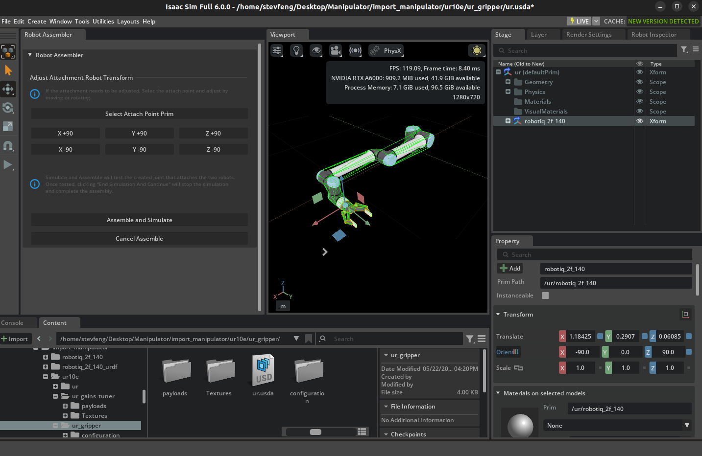
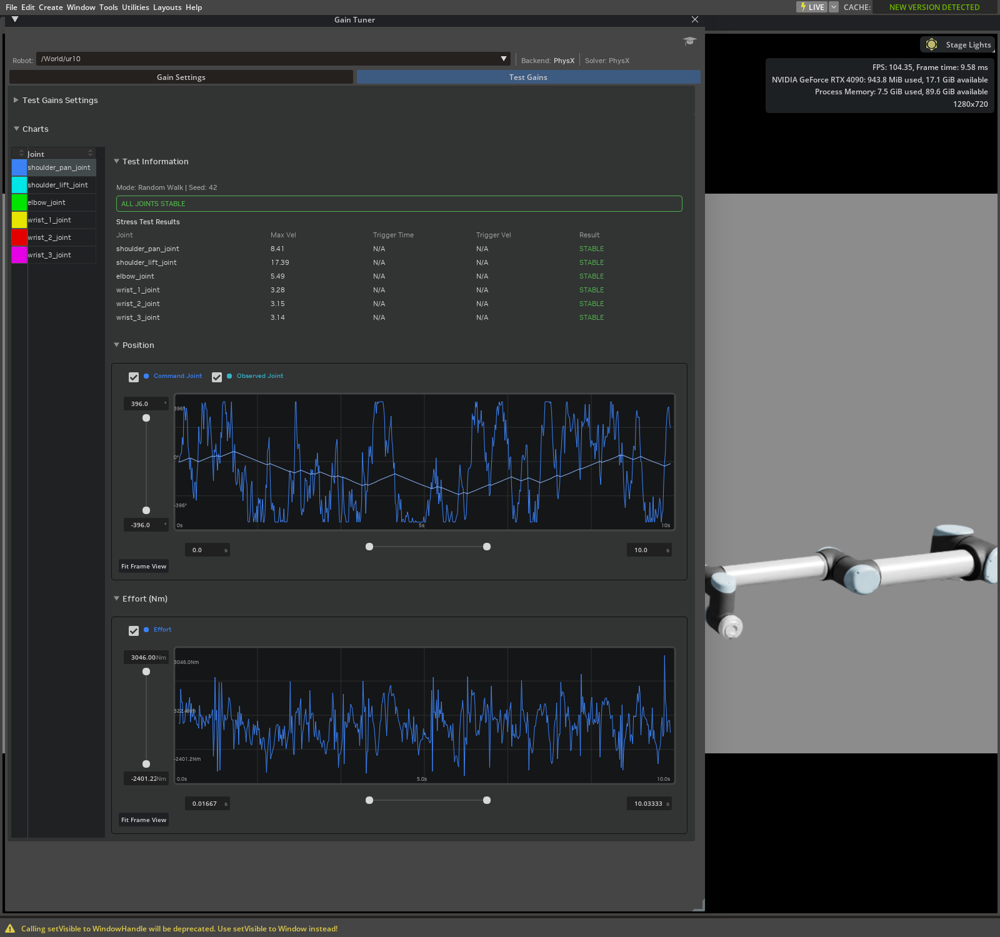
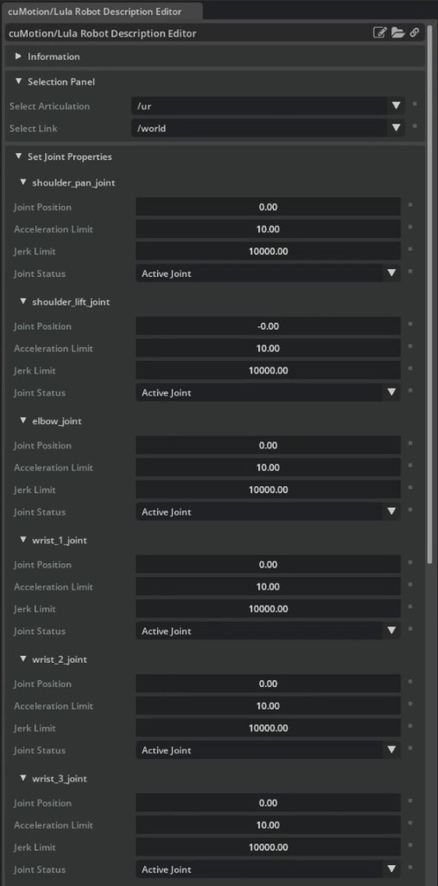

机械臂工作流：从 URDF 到抓取与放置#
使用此工作流，可将机械臂和末端执行器从统一机器人描述格式 (URDF) 源文件转换为经过验证的抓取与放置任务。该工作流连接了详细的机器人设置、增益调整、运动生成以及 ROS 2 教程，而无需重复这些内容。
按顺序完成阶段 1–7。仅当应用程序需要时，才完成可选的 ROS 2 阶段。在每个阶段，请先满足检查点要求，然后再继续。如果检查点失败，请使用故障排除表确定需要关注的层级，然后再更改规划器参数。

学习目标#
完成此工作流后，您将能够：
导入并组装机械臂和末端执行器。
验证关节驱动、限位、增益以及直接关节控制。
根据组装好的机器人，验证机器人描述和坐标系定义。
选择并配置规划器、控制器、轨迹执行器和任务编排器。
运行并验证基于物理仿真的抓取与放置任务，并对照可衡量的成功标准进行评估。
在原生 Isaac Sim 控制、ROS 2 Bridge 和进程内
ros2_control之间进行选择。诊断在资产、驱动、运动学、规划、执行、抓取或 ROS 2 层级出现的故障。
先决条件#
完成入门级的轮式机器人教程，参见 Robot Setup Tutorials Series。
获取机械臂 URDF 及其引用的所有网格文件。
获取末端执行器 URDF 或 USD 资产及其安装变换。
在调整或运行规划器之前，选择任务验收关卡。如果项目尚未定义这些关卡，请从 选择验证关卡中的示例值开始。
准备输入资产#
在阶段 1 之前，确保源文件自包含且物理上可用：
将 Xacro 或其他宏展开为 URDF。导入器使用生成的 URDF，而不是宏源文件。
确保每个
package://或相对网格 URI 在运行 Isaac Sim 的机器上可解析。将网格包与 URDF 一起保留，或添加 URDF 导入器配置选项中描述的包映射。检查尺寸是否使用米，旋转关节限制是否使用弧度，以及每个驱动关节是否声明了轴、下限和上限、力矩和速度。每个动态连杆需要正质量和有效的惯性。
确认视觉网格和碰撞网格以相同的比例和方向出现。当详细的渲染几何体导致不稳定或昂贵的接触时，优先使用更简单的碰撞网格。
对于独立的末端执行器，识别其根连杆、可控关节、模仿关节、打开和关闭位置以及安装框架。对于 USD 末端执行器，记录等效的 prim 路径和关节名称。
记录从机械臂法兰到末端执行器根节点的固定变换。如果制造商未提供该信息，请将两个坐标系放置在通用的 CAD 或 USD 视图中，并测量平移和旋转。
当每个资产导入时没有缺失网格，连杆和关节层级完整，并且预期的尺寸和关节限位可见时，资产即准备就绪。有关导入器的坐标系和关节约定，请参阅 URDF 约定。
选择验证门槛#
如果已知硬件要求或应用要求，请使用这些要求。否则，以下值是桌面仿真的实用起始门槛。这些仅是示例，并非通用的机器人规格；请根据机器人、物体尺度和任务风险收紧或放宽这些值，然后在每次验证运行中记录所选的值。
测量量 |
起始门槛 |
如何应用 |
|---|---|---|
手臂关节跟踪 |
最大误差 |
在运动稳定后检查每个指令手臂关节。 |
抓取时的工具位姿 |
位置 |
测量物理抓取点，而不仅仅是法兰坐标系。 |
提升和保持 |
在支撑物上方 |
要求保持连续间隙且不丢失抓取。 |
运输过程中的物体漂移 |
相对于抓取坐标系的位置 |
从抓取闭合时捕获的物体位姿进行测量。 |
放置 |
位置 |
将稳定后的物体位姿与请求的放置位姿进行比较。 |
稳定后的物体 |
线速度 |
仅在满足两个速度限制后才开始保持间隔。 |
阶段超时 |
机械臂运动 |
将超时视为门控失败，而不是推进任务。 |
注意
可选的阶段 8 提供了多种 ROS 2 路径。链接的 MoveIt 2 教程 需要 Linux ROS 2 环境。其他 ROS 2 工作流可以在 Windows 上使用 由 Pixi 管理的 ROS 2 Jazzy；请遵循每个链接教程中的平台要求。
重要
参考机器人范围：四个机械臂系列教程和 可运行的拾取和放置脚本使用带有 Robotiq 2F-140 夹爪的 UR10e。 其他链接的组件教程可能展示不同的机器人。对于其他 机器人，请从该机器人推导其限制、增益、坐标系、控制器配置和任务 位姿；仅提供不同的 URDF 或 XRDF 并不能 使脚本适应。在与其他机器人一起运行它们之前，请完成 自定义机器人适配。
工作流概览#
舞台 |
目标 |
主要指南 |
继续条件 |
|---|---|---|---|
1 |
导入并组装机器人。 |
关节结构和夹爪加载时没有不稳定运动。 |
|
2 |
配置物理和关节。 |
关节名称、限位、驱动器和力矩限制均正确。 |
|
3 |
调整并压力测试驱动器。 |
机器人在预期负载下能够跟踪目标并保持稳定。 |
|
4 |
验证机器人描述和坐标系。 |
受控关节、关节映射和运动坐标系与组装好的机器人相匹配。 |
|
5 |
选择并配置运动和堆栈。 |
原生堆栈已配置完成，并为阶段 8 确定了任何 ROS 2 规划输入。 |
|
6 |
独立验证所选组件。 |
适用的直接控制、运动和堆栈测试均通过。 |
|
7 |
运行并验证抓取和放置。 |
教程 9：抓取和放置示例 的第 4 部分 |
抓取、提升、搬运、释放和放置检查均通过。 |
8（可选） |
在需要时添加 ROS 2。 |
在通过 MoveIt 2 进行规划之前，直接 ROS 2 控制即可生效。 |
阶段 1：导入并组装机器人#
请按照 教程 6：设置机械臂 导入机械臂和末端执行器。
在组装之前检查导入的资源。记录手臂关节、夹爪命令关节、模仿关节、基座链接、法兰、末端执行器根节点以及预期的工具坐标系。
在连接夹爪之前，配置模仿关节和夹爪限位。
使用 Robot Assembler 将末端执行器连接到机械臂。
规范化组装后的关节结构：
在组装后的机器人上保留一个
UsdPhysics.ArticulationRootAPI。如果附加的关节式末端执行器保留了从属的关节结构根节点，请从该 prim 中移除 Articulation Root API，但不要移除其刚体或关节模式。对于关节式末端执行器，请确认固定关节将法兰和末端执行器根节点连接到同一关节层级结构中。
确认固定基座机械臂仍附着在世界坐标系上。
对齐末端执行器。在 Robot Assembler 中选择预期的法兰和连接坐标系，应用制造商提供的固定变换，并从多个视角检查结果。应修正组装变换或固定关节，而不是独立移动视觉网格。
创建从源机器人描述到最终 USD 资产的名称映射。包括所有受控臂关节、夹爪命令关节、基座连杆、法兰和工具坐标系。记录已更改的名称；不要依赖组装后自由度（DOF）索引保持不变。
组装后检查碰撞过滤。标准的 Robot Assembler 工作流不会自动在组装的组件之间创建过滤对。使用 Robot Self-Collision Detector 检查内部对，包括模仿耦合的夹爪连杆，并检查任何现有的过滤器。对于预期会重叠但不产生接触的每个对，启用 Filtered Pair 以显式编写
UsdPhysics.FilteredPairsAPI关系。确认每个有意设置的过滤器在保存的资产中均持续存在。对于非预期的重叠，修正对齐或碰撞几何体。保持与任务对象和环境的碰撞启用。按 Play，停止时间轴，并多次重置舞台。
注意
如果末端执行器使用吸盘或磁吸连接而非机械手指，请在步骤 4 之前遵循 Setting up a Surface Gripper。在每个接触点创建一个 D6 关节，通过 Create > Robots > Surface Gripper 创建 Surface Gripper prim，并将 Attachment Points 设置为该 D6 关节。设置 Max Grip Distance 以接受接触。当连接需要匹配硬件力包络时，请调整 Shear Force Limit 和 Coaxial Force Limit。


重要
检查点：机器人保持组装状态，其连杆不会分离或爆炸，且夹爪跟随法兰。在调整驱动器之前，请解决 articulation-root、attachment、collision 和单位问题。
阶段 2：配置物理和直接控制#
对于提供的 UR10e 和 Robotiq 2F-140 资产，请按顺序完成 Tutorial 7: Configure a Manipulator 中的以下步骤。该教程包含确切的 prim 选择和 UI 截图：
调整 UR10e 的 articulation：在
ur/Geometry/World上创建 PhysX articulation，将求解器位置迭代次数设置为64，速度迭代次数设置为4，然后将睡眠阈值设置为0.00005，稳定化阈值设置为0.00001。添加夹爪物理材质：将参考材质的静摩擦和动摩擦设置为
1.0，并将其绑定到两个内指碰撞体。配置夹爪力矩限制：对于提供的资产，将
finger_jointMax Force 设置为200。检查组装好的关节结构：在 Physics Inspector 中刷新关节结构，并验证测得的 DOF 位置是否跟随目标位置。
这些数值是针对所提供资产的参考设置，并非所有机械臂的默认值。对于其他机器人，请从其制造商限制开始，并检查以下属性：
关节类型、轴、下限和上限。
位置或速度驱动配置。
刚度、阻尼、最大力和最大关节速度。
连杆质量、惯性、碰撞几何体和自碰撞行为。
最终应用程序使用的物理时间步长和求解器设置。
使用 Articulation Controller 一次命令一个手臂关节。然后运行 Tutorial 9: Pick and Place Example 的第 1 部分，以独立打开和关闭参考夹爪。直接命令可将资产和执行器层与逆运动学 (IK) 及运动规划隔离开来。
重要
检查点：每个被命令的关节都沿预期方向移动，在其限位处停止，并报告匹配的位置。夹爪开合时不会移动无关的手臂关节。
阶段 3：调整并验证关节增益#
注意
本阶段使用 教程 11：调整关节驱动增益，该教程在本系列中列为高级级别。请立即完成该教程，然后返回以继续阶段 4。
在测试运动规划器之前，请完成 教程 11：调整关节驱动增益。调整时应使用与最终阶段 7 抓取放置场景相同的负载、物理时间步长、求解器设置、力矩限制和速度限制。这并不意味着使用默认值，除非最终场景有意使用默认值。调整时请安装预期的夹爪和代表性负载；如果负载质量变化，请验证最重的计划负载。
测试 |
揭示内容 |
所需结果 |
|---|---|---|
零增益观察 |
确认导入的关节是否具有活动驱动器。 |
观察到的响应与编写的驱动配置一致。 |
吸附到限位 |
暴露刚度、阻尼、最大力不足或限位不可达的问题。 |
每个所需关节均通过测试，或具有记录在案的碰撞限制范围。 |
阶跃函数 |
显示超调量、稳定时间和稳态误差。 |
跟踪满足任务的精度和稳定要求。 |
正弦波 |
显示重复运动中的滞后和跟踪质量。 |
关节在预期的应用带宽内跟踪目标。 |
压力测试：随机游走 |
测试独立关节目标下的稳定性。 |
启用速度限制后，所有必需的关节均保持稳定。 |
压力测试：对抗性 |
测试复杂的关联配置。 |
未出现不稳定、振荡加剧或 NaN 值。 |
负载保持与运输 |
使用实际工具和负载测试重力补偿和跟踪性能。 |
机械臂能够保持和运输负载，且无不可接受的漂移。 |


在 Gain Tuner 中区分 Fail 和 Blocked。失败通常表明存在跟踪或执行器问题。被阻止的结果可能表明碰撞几何体导致无法达到设定的关节限位。仅将 Disable Self-Collisions 用作诊断手段；如果测试随后通过，则应收紧关节限位或修正碰撞几何体，而不是增加增益。
记录最终的刚度、阻尼、最大力、速度限制、测试参数、物理时间步长、求解器设置、末端执行器质量和负载。
重要
检查点：机器人通过跟踪和稳定性测试，且未超出预期的执行器或速度包络。
阶段 4：验证机器人描述和坐标系#
在选择运动堆栈之前，记录并验证所有选项必须匹配的关节和坐标系定义。将最终组装的 USD 资产视为真实来源，而不是早期的仅机械臂资产。如果运动组件使用 URDF，请确认该 URDF 表示受控的运动链，并包含该组件使用的所有坐标系。
检查以下项目：
机器人描述中的每个受控关节在 USD 关节结构中都有匹配的名称、匹配的限制和匹配的轴。
机器人描述中的关节顺序与 USD 关节结构顺序之间的任何差异都有明确的基于名称的映射。
基座坐标系与 USD 关节结构根变换匹配。
法兰和预期的工具坐标系存在于组装好的运动链上。
物理抓取点相对于工具坐标系进行测量。对于平行夹爪，使用闭合手指中心；对于吸盘，使用附着点。
基座、法兰、工具坐标系和物理抓取点之间的变换使用预期的单位和方向约定。
解决机器人描述中的差异或使用显式名称映射，而不是重命名引用资产中的 prim。
重要
导入机械臂就绪检查点：在选择运动堆栈之前，请确认以下所有项目：
在保存并重新打开资产后，阶段 1–3 检查点通过。
最终的 USD 资产具有一个连接的机械臂关节结构以及任何铰接末端执行器关节，并具有预期的法兰到末端执行器变换。
机器人描述针对最终 USD 资产解析每个所需的关节、连杆和任务坐标系。直接命令通过每个适用的命令字段到达预期的命名自由度。
仅过滤有意为之的内部碰撞对，并保持与任务对象和环境的碰撞启用。
在所有适用项目通过之前，不要开始运动生成集成。
阶段 5：选择并配置运动和堆栈执行#
注意
在下表以及 教程 9：抓取与放置示例 中，mg 指的是 isaacsim.robot_motion.experimental.motion_generation。该模块
使用 experimental 命名空间；其 API 可能会在不同版本之间发生变化。
控制器一词可能指代多个层级。请在每个所需层级中选择一个选项， 而不是将所有 API 视为可互换的规划器。 仅当应用程序需要时，才在阶段 8 中添加可选的 ROS 2 层级。
层级 |
选项 |
适用场景 |
输出或职责 |
|---|---|---|---|
任务编排 |
内联阶段、有限状态机或行为树。 |
任务序列方法处理接近、抓取、恢复和放置行为。 有关行为树模式，请参阅 使用 py_trees 的行为树 或 使用 Omniverse Behavior Tree 的行为树。 |
选择下一个运动或夹爪动作。 |
反应式运动 |
cuMotion |
跟踪变化的目标。对于具有障碍物感知能力的 GPU 运动，使用 RMPflow； 对于 Linux x86_64 上基于 CPU 的加权逆运动学，使用 PINK。 |
每个控制步骤所需的关节状态。 |
全局运动 |
cuMotion |
在执行前寻找无碰撞路径或优化受约束的轨迹。 |
|
时间参数化 |
cuMotion |
将已知路径或航点转换为平滑、时间最优的运动。 |
|
轨迹执行 |
|
原生规划器或生成器已生成一个 |
对轨迹进行采样并生成期望的关节状态。 |
ROS 2 规划 |
MoveIt 2。 |
ROS 2 规划流水线必须负责运动规划。 |
通过 Bridge 或 |
底层驱动 |
Articulation API、Articulation Controller 或 |
关节目标必须传递到 PhysX 关节驱动。 |
应用位置、速度或力矩命令。 |
配置所选选项#
仅完成所选运动选项所需的配置：
cuMotion： 按照 教程 8：生成机器人配置文件 将组装好的机器人导出为 URDF 并生成其 XRDF。确认 XRDF 定义了 cuMotion 所需的受控关节、默认配置和工具坐标系。确认所选的 XRDF 工具坐标系（例如
tool0）对应于组装好的 USD 中的物理末端执行器安装位置。记录从该坐标系到物理抓取点的变换。PINK：加载包含受控关节和选定工具坐标系的 URDF。该 URDF 无需包含通过 USD 关节结构单独控制的夹爪连杆，也不需要 XRDF。从 URDF 构建可选的碰撞模型，仅在使用碰撞屏障时提供 SRDF 碰撞排除项。请参阅 机器人配置教程。
MoveIt 2：将设置推迟到第 8 阶段。MoveIt 2 使用所选 ROS 2 路径提供的机器人描述，以及其 SRDF、规划组和控制器配置。它不使用 XRDF。
直接关节控制或轨迹执行：使用 USD 关节结构及其关节映射。当没有运动学或规划组件需要运动模型文件时，无需单独的此类文件。
如果选择支持碰撞感知的 cuMotion 选项，例如 RMPflow、
GraphBasedMotionPlanner 或 TrajectoryOptimizer，请验证其
碰撞球体是否覆盖机械臂和附加的末端执行器，且不存在较大间隙或过度膨胀。根据最终组装的 USD 资产验证 XRDF 和自碰撞规则。TrajectoryGenerator 本身不执行碰撞避免，因此不需要此碰撞球体检查。


对于维护中的原生运动选项，请使用以下详细教程：
RMPflow 用于反应式、 障碍物感知的目标跟随。
Graph-Based Motion Planner 用于生成无碰撞的基于采样的路径。
Trajectory Optimizer 用于生成无碰撞的优化轨迹。
Trajectory Generator 用于根据已知路点或路径规范生成时间最优运动。
PINK IK Controller 用于 基于 CPU 的反应式逆运动学（IK）。
对于高级组合，使用
Controller composition 来组合、链接或切换 BaseController 实现。使用
Robot Poser 来创建或回放命名的关节姿态。这两种选项都不是完整的碰撞感知任务规划器。

第 4 部分 Tutorial 9: Pick and Place Example 中的完整 UR10e 示例使用了 cuMotion RMPflow 和 PINK。Graph-Based Motion Planner、Trajectory Optimizer 和 Trajectory Generator 教程仅为组件演示；它们并未提供相同抓取放置任务的即插即用版本。这些组件生成 mg.Path 或 mg.Trajectory 对象。使用 mg.TrajectoryFollower 将结果转换为关节命令，并提供一个任务策略，该策略为每个运动段调用规划器，并在各段之间处理夹爪动作。
对于线性任务，首先使用内联阶段，然后当任务需要恢复、重试、中断或协调时，使用有限状态机或行为树。请参阅 State Machines for Robot Behavior。
注意
对于新开发工作，请使用上述当前选项。isaacsim.robot_motion.lula 和 isaacsim.robot_motion.motion_generation API 是用于维护旧应用程序的遗留路径。基于雅可比矩阵的自定义微分 IK 和直接的 RobotPoser 运动学是高级构建模块，而非完整的碰撞感知任务规划器。
重要
检查点：您已在每一层确定了一个选项——任务策略、规划器或反应式控制器、执行器以及底层驱动路径。使用第 4 阶段的关节和坐标系定义配置每个选定的原生组件，并确认规划器的输出类型与执行器的预期输入匹配。对于可选的 ROS 2 规划层，记录第 8 阶段所需的机器人描述、规划配置和控制器输入。对于具备碰撞感知功能的选项，确认其碰撞表示随每个连杆移动。
第 6 阶段：独立验证选定的组件#
从直接关节控制和夹爪控制开始，然后仅测试在第 5 阶段选定的运动和组件执行部分。 教程 9：抓取与放置示例的第 1–3 部分提供了针对提供的 UR10e 资产的参考测试。
调整示例以适配导入或自定义机器人#
独立的抓取与放置脚本实例化了提供的 UR10e USD，并包含 UR10e 特定的名称和位姿。在 cuMotion 示例中，
--xrdf-dir 更改运动库的机器人描述。在 PINK 示例中，--urdf 更改运动学模型。这两个选项均不会替换模拟的 USD 关节结构或剩余的 UR10e 特定值。即使导入的资产是 UR10e 的另一个版本，也请完成此适配。
在将脚本用于导入的资产之前，请调整并验证以下内容：
机器人 USD 引用和
_ROBOT_PRIM_PATH。有序的臂关节名称、
_GRIPPER_JOINT，以及夹爪命令或附着接口。_EE_LINK_NAME、选定的工具坐标系、_TOOL_OFFSET，以及物理抓取偏移量。初始姿态、工具朝向、抓取位姿、放置位姿以及工作空间间隙。
夹爪的张开和闭合目标位置、模仿行为以及力限制。
选定的机器人描述文件，以及针对同一组装 USD 资产的任何碰撞表示。
每一步应用的控制器输出。将每个可用的位置、速度和力矩字段转发到其对应的命名自由度（DOF）。对于由 Newton 创建的关节链，请验证所需的速度目标是否已到达机械臂执行器，而不是假设位置目标就足够了。
注意
参考 cuMotion 抓取和放置脚本仅应用期望的关节位置。如果选定的执行器接口还需要控制器速度目标，请使用 desired.joints.velocity_indices 应用 desired.joints.velocities。当控制器未提供速度目标时，不要合成速度目标。
验证选定路径#
选定组件 |
测试 |
所需结果 |
|---|---|---|
直接关节链和夹爪控制 |
运行 教程 9：抓取和放置示例 的第 1 部分，或改编后的等效内容，并直接命令每个所需的机械臂和夹爪关节。 |
关节选择、方向、限制、模仿行为和夹爪状态均正确。 |
|
使用已知的无碰撞关节空间轨迹运行第 2 部分。 |
执行器从预期状态开始，并在定义的关节公差范围内跟踪，且不会超时。 |
cuMotion RMPflow |
先运行第 3 部分（无障碍物），然后运行第 3 部分（有障碍物）。 |
工具坐标系跟踪和世界坐标系同步保持在定义的容差范围内。 |
PINK |
遵循 IK 控制器教程，在测试接近关节极限的目标之前，先测试附近的非奇异目标。 |
求解器在不违反关节极限或不改变为不可接受姿态的情况下到达目标。 |
cuMotion 全局规划器或轨迹生成器 |
运行选定的详细教程，并使用选定的轨迹执行器执行其输出。 |
规划返回预期的 |
重要
检查点：每个适用的组件测试均单独通过。在直接控制、轨迹执行、工具坐标系跟踪或世界坐标系同步失败时，不要开始完整任务。
阶段 7：运行并验证抓取和放置#
针对 UR10e 参考路径，运行 教程 9：抓取和放置示例 第 4 部分中的 cuMotion RMPflow 或 PINK 示例，或运行阶段 6 中改编的任务。典型任务包含以下阶段：
移动到抓取姿态上方。
下降到抓取姿态。
闭合或连接夹爪。
提升并确认物体离开支撑面。
移动到放置姿态上方。
下降到释放姿态。
打开或断开夹爪。
后退并允许物体稳定。
验证物体，而不仅仅是末端执行器目标。每次运行时，请使用 先决条件 中定义的验收标准。
注意
在运行任务之前，请确认抓取目标具有刚体 API、适合动态刚体的碰撞几何体，以及适合任务的质量和惯性。如果任务需要 PhysX 默认值以外的摩擦系数，请绑定物理材质。
注意
第 4 部分脚本演示了运动序列。它们测试工具或夹爪的收敛性，在阶段超时后继续执行，但不评估物体的提升、保持或稳定放置。因此，到达最终阶段并不表示验证成功。请在应用程序中添加物体状态检查或独立记录测量数据，并在第一个检查点失败时停止。
检查点 |
测量通过条件 |
失败通常归因于 |
|---|---|---|
抓取 |
夹爪报告预期状态，且物体位于抓取坐标系定义的位置和姿态容差范围内。 |
坐标系、逆运动学 (IK)、夹爪关节、接触、附件配置或物体刚体属性（质量、摩擦、碰撞几何体）。 |
提升和保持 |
物体在定义的保持时间内保持在最小提升高度以上，且未超出漂移或速度限制。 |
夹爪力、摩擦、负载调整或抓取偏移。 |
运输 |
在机械臂沿指令路径运动并保持所需环境间隙的同时，物体保持在抓取容差范围内。 |
跟踪增益、加速度、碰撞模型或世界同步。 |
放置和释放 |
释放后的物体在任务的位姿容差范围内稳定于支撑面上，且线速度和角速度均低于稳定阈值。 |
放置坐标系、释放时序、支撑面碰撞或任务策略。 |
使用刚体位姿和速度反馈进行验证，并将测量值与运行结果一同保留。工具可能到达目标位置，但物体可能滑动、仍停留在源支撑面上或错过放置区域。将运动阶段超时视为失败。
cuMotion UR10e 示例将抓取物体从跟踪的障碍物集合中排除，以便机器人能够接近并抓取它。排除操作也会移除负载与环境之间的碰撞检查。抓取后，如果所选堆栈支持，则将负载表示为附加的碰撞几何体。如果不支持，请记录缺失的碰撞覆盖范围，并使用感知负载的机器人碰撞几何体、保守的间隙以及受限的运输路径。
明确标识抓取机制：
对于平行夹爪，使用直接的夹爪关节目标。
对于编写的吸盘或磁性附着行为，使用
SurfaceGripper。将固定关节附着标记为辅助抓取。
对于严格的仅接触任务，不要通过位姿写入、运动学跟随或隐藏附着来移动物体。
重要
检查点：物体在同一次运行中通过抓取、提升、运输和释放位姿检查。
阶段 8（可选）：添加 ROS 2 规划和控制#
重要
完成阶段 1–7，使用原生 Isaac Sim 控制，并满足 先决条件 中列出的平台要求，然后再进入此阶段。
仅在原生直接关节控制通过后，再添加 ROS 2。选择一种连接模型：
路径 |
架构 |
起始于 |
|---|---|---|
ROS 2 桥接 |
通过 ROS 2 主题发布关节状态并接收命令。MoveIt 2 和控制器在 Isaac Sim 外部运行。 |
|
进程内 |
在 Isaac Sim 内部托管标准 Controller Manager。直接使用
轨迹控制器，或通过其
|

对于进程内 ros2_control，USD 驱动器决定命令
接口：
刚度大于零选择位置命令接口。
有阻尼但无刚度选择速度命令接口。
既无刚度增益也无阻尼增益的驱动器选择力矩命令接口。
没有驱动器的关节仅支持状态读取，无法接收命令。
首先，在不使用 MoveIt 2 的情况下发送已知的关节轨迹命令。如果成功，则添加 MoveIt 2 并验证关节名称、关节顺序、规划组、控制器名称以及 FollowJointTrajectory 动作。当启用 use_sim_time 时，发布 /clock。控制器管理器的更新频率不能超过物理仿真频率。
重要
检查点：关节状态反馈是最新的，直接控制器命令能移动预期的关节，且只有在直接 ROS 2 控制路径通过后，MoveIt 2 才会执行。
按层级进行故障排除#
在第一个失败的检查点停止。在更改后续规划器或任务策略层之前，先修复该层。
症状 |
首先检查 |
纠正措施 |
|---|---|---|
按下 Play 时机器人倒塌。 |
关节驱动器和增益。 |
确认所需关节具有驱动器，然后完成零增益和 Snap to Limits 工作流程。 |
机器人振荡、剧烈移动或产生 NaN 值。 |
增益、速度限制、时间步长和求解器设置。 |
降低激进的增益或目标值，恢复现实的速度限制，并重新运行 Stress 测试。 |
Snap to Limits 报告 Fail。 |
刚度、阻尼、最大力和负载。 |
调整执行器并确认最大力未限制驱动器。 |
Snap to Limits 报告 Blocked。 |
自碰撞和定义的关节限制。 |
使用 Disable Self-Collisions 进行诊断，然后修正碰撞几何体或收紧关节限制。 |
直接关节命令移动了错误的关节或没有移动任何关节。 |
铰接根节点、DOF 名称和命令索引。 |
通过铰接体报告的名称寻址关节，并验证每个可驱动关节均配有驱动器。 |
在空场景中 IK 失败。 |
基坐标系、工具坐标系、可达性和关节限位。 |
可视化指令工具位姿，验证坐标系名称和单位，并测试附近的非奇异目标。 |
无障碍物时运动成功，但有障碍物时失败。 |
所选碰撞表示形式和世界同步。 |
修正所选碰撞表示形式，更新机器人根变换，同步障碍物变换，并减少过度的障碍物膨胀。对于 cuMotion，请检查碰撞球覆盖范围。 |
规划成功但轨迹跟踪发散。 |
初始状态、驱动器跟踪、轨迹时钟和控制率。 |
从规划状态开始，重置控制器，传递绝对控制器时间，并在执行时间步长下重新运行增益测试。 |
工具到达立方体但立方体未抬起。 |
抓取坐标系、接触、模拟关节、力、摩擦以及物体质量和碰撞几何体。 |
对齐物理抓取点，验证夹爪闭合，确认所选抓取机制已激活，并验证物体具有非零质量和带有摩擦的物理材质。 |
手持物体导致避障或阻止放置。 |
目标物体过滤和携带载荷碰撞覆盖。 |
仅在必要时在接近阶段排除目标。抓取后，在支持的情况下使用附加碰撞几何体。否则，记录规划器不检查载荷与环境之间的碰撞，并强制执行保守的载荷感知间隙。 |
原生控制正常，但 ROS 2 控制不正常。 |
关节名称、接口、控制器状态和 ROS 图。 |
遵循阶段 8 诊断序列
(阶段 8（可选）：添加 ROS 2 规划和控制)：列出硬件接口
和控制器，验证 |
MoveIt 2 可以规划但无法执行。 |
控制器名称和动作端点。 |
确认预期的轨迹控制器已激活，并暴露
配置的 |
首次运行似乎卡住。 |
资产下载和材质编译。 |
等待资产和 MDL 加载完成，然后在场景完全加载后 复现控制器问题。 |
完成检查清单#
在将机器人用于其他操作任务之前，请确认：
保存的 USD 包含预期的关节结构、末端执行器、物理 属性和驱动。
在添加 IK 或规划之前，已验证直接的臂和夹爪命令。
增益结果包含测试的载荷、时间步长、限制和求解器 配置。
机器人描述、基座坐标系、工具坐标系和抓取点与 保存的 USD 匹配。当所选堆栈使用碰撞避免时，其碰撞 表示也与保存的 USD 匹配。
所选规划器产生正确的输出类型并使用适当的 执行器。
任务策略对每个阶段都有收敛检查和超时设置。
在抓取、提升和释放之后，根据预定义的容差和持续时间，通过记录的物体位姿和速度测量值来判定成功。
使用 ROS 2 时，ROS 2 关节名称和命令接口与 USD 驱动器相匹配。